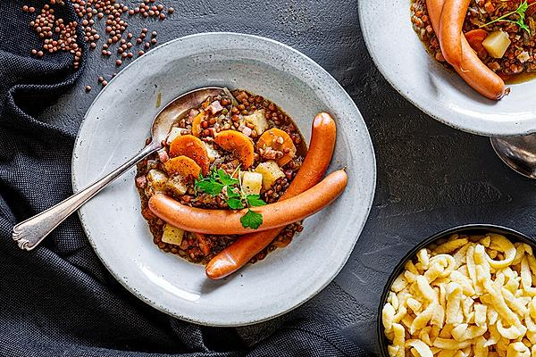

Linsen

Linsen mit Spätzle, mmh!
Although it's called a salad it doesn't have much in common with the healthy version of it ;P
Ingredients
- 1/2 bunchradish
- 1red onion
- 250gmeat sausage
- 5pickles
- 1 pinchsalt and pepper
- 1/4 tspmustard
- 30mlvinegar (e.g. herb vinegar)
- 50mlsunflower oil
- 1 pinchnutmeg
Back